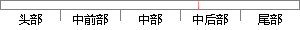

任务控制定义好后，还需要定义任务控制块的链表指针、任务块的变量，当前运行任务块的指针、最高优先级就绪任务的指针，优先级有序表等，如下图所示。
片段位置图

相似结果
1
原句片段： 任务控制定义好后，还需要定义任务控制块的链表指针、任务块的变量，当前运行任务块
相似片段： 为了加快对任务控制块的访问速度,任务链表为双向...专门用于存放当前正在运行的任务的任务控制块的指针。...系统又定义了另一个INT8U类型的变量OSRdyGrp,它中间...
| 标题 | 《uC/OS-II中的任务 - MR_H - 博客园》 |
| 对比库 | PaperRater云论文库 |
| 网址 | http://www.cnblogs.com/huangwei/archive/2010/04/08/1707708.html |
| 相似率 | 89.66% （严重抄袭） |
2
原句片段：的指针、最高优先级就绪任务的指针，优先级有序表等，如下图所示。
相似片段：时指针ostcbhighrdy指 向优先级最高就绪任务也就是...四位如下所示(图4.1)如果某位置为1表示任务 正在...高优先级有着最小优先级号所以不管对于求高3位还是...
| 标题 | 《任务调度机制_百度文库》 |
| 对比库 | PaperRater云论文库 |
| 网址 | http://wenku.baidu.com/link?url=3MwzOUuycXDLrA25OIvdrK8x4E0BgkpDSCS2WkllNM8Yy85SPwt5qusK-teWJK-qast1KLwwZ-u5WypXWbwVLSe6hhUkvmkD03l2lco_Um3 |
| 相似率 | 81.82% （严重抄袭） |
※ 片段修改建议 ※
近似词参考：- 任务：使命 义务
- 定义：界说
- 控制：节制
- 就绪：停当
系统自动生成语句： 使命节制界说好后，还需要界说使命节制块的链表指针、使命块的变量，当前运行使命块的指针、最高优先级停当使命的指针，优先级有序表等，如下图所示。
注：本片段修改建议为系统自动生成，仅供参考。